ＦＬＡＴＯＵＴ ＲＸ－７（ＦＤ３Ｓ）
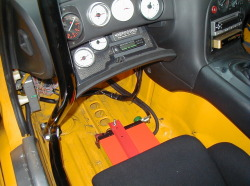
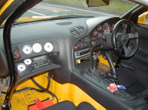

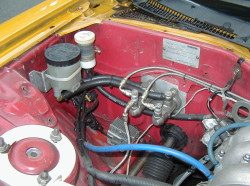
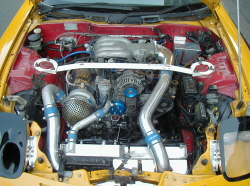
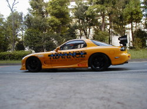
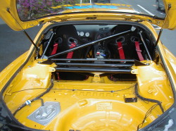
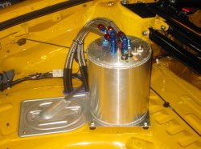
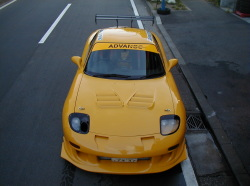
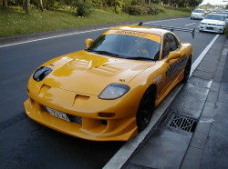
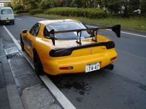
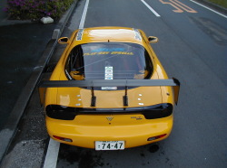
ノーマルタービン＋ブーストアップで富士スピードウェイにて1'44''4を記録した後、タービン交換を機に本格的なサーキット走行メインのFD3Sへと変身を始めました。
エンジンはサイドポート加工＋TD06-25Gというロータリー定番メニューで仕上げ、最高出力441.1ps、最大トルク48.5kgmを達成。
ブレーキはABSとマスターパックを外し、ツインマスター＋前後バランス調整式に変更。ブレーキ性能を最大限に活かすため、フロントタイヤはフェンダー加工を施して9Jに255サイズを装着しました。
足回りもタイヤサイズ変更に合わせて何度もリセッティングを繰り返し、現在はミッションを含むギヤ比の見直しとさらなる軽量化を進めているFLATOUT FD3Sです。
お客様のFD3Sには、FLATOUT FD3Sで得たデータはもちろん、ノーマル状態でも非常にバランスの良い車なので、そのバランスを崩さないようチューニングメニューをご提案しています。
| 日付 | コース | ドライバー | タイム |
|---|---|---|---|
| 2001年 | FISCO | 松村 | 1'41''488 |
| 日付 | 名称 | コース | クラス | ドライバー | 結果 |
|---|---|---|---|---|---|
| 2000.10.19 | HKS主催 SPECIAL STAGE IN FISCO | FISCO | クラスPRO | 松村 | 準優勝 |
| 2000年 | アドバンス主催 FISCOタイムトライアルSPL年間シリーズ（全５戦） | FISCO | 松村 | ２位 | |
| 2001.04.26 | APEX主催 APEX CUP ROUND 1 | FISCO | ショップクラス | 松村 | 優勝 |
| 2001年 | アドバンス主催 FISCOタイムトライアルSPL年間シリーズ（全７戦） | FISCO | 松村 | ２位 | |
| 2002.05.29 | APEX主催 APEX CUP ROUND FUJI | FISCO | ショップクラス | 松村 | －－ |
| エンジン加工 | サイドポート加工 ／ ローターランド加工 |
| タービン廻り | TD06-25G タービンキット |
| コンピューター・電装品 | HKS V-Pro ／ HKS EVCⅢ |
| インタークーラー | トラスト R-SPL-HG 2層 |
| 冷却系 | ロンディビス アルミ3層ラジエター ／ トラスト 13段オイルクーラー |
| 燃料系 |
850cc × 4 インジェクター NISMO GT-R フューエルポンプ NISMO フューエルレギュレーター KSP コレクタータンク |
| マフラー | FLATOUT ステンレスマフラー |
| 駆動系 | OS ツインプレートクラッチ ／ KAAZ 1.5Way LSD |
| 足廻り |
FLATOUT サスペンションキット FLATOUT リアピロリンクキット オートリファイン スタビライザー |
| ブレーキ |
フロント：トラスト アルコンキャリパー リア：純正17インチローター エンドレス ブレーキパッド APP ブレーキホース マスターパックレス、ツインマスター、バランサー付 |
| 補強 |
セーフティー21 ロールゲージ追加 ウレタン補強 オートセレクト ガッチリサポートPRO オクヤマ タワーバー（フロント・リア） |
| 内装 | レカロ SP-G バケットシート ／ サベルト 4点式シートベルト |
| 外装 |
RE雨宮 Facer-N1加工 RE雨宮 UNDER PANEL-PRO FRP RE雨宮 AD HOOD-2 ARC N1ウイング |
| タイヤ＆ホイール | RAY’S ツーリングエボ ／ BS RE540S |
| 軽量＆その他 | アンダーコート剥し、エアコンレス、バッテリー移動 など |
| オイル |
エンジン：MOTUL コンペ 15W-50 ミッション：RED LINE ショックプルーフ デフ：RED LINE 75-140NS ブレーキ：エンドレス RF650 |